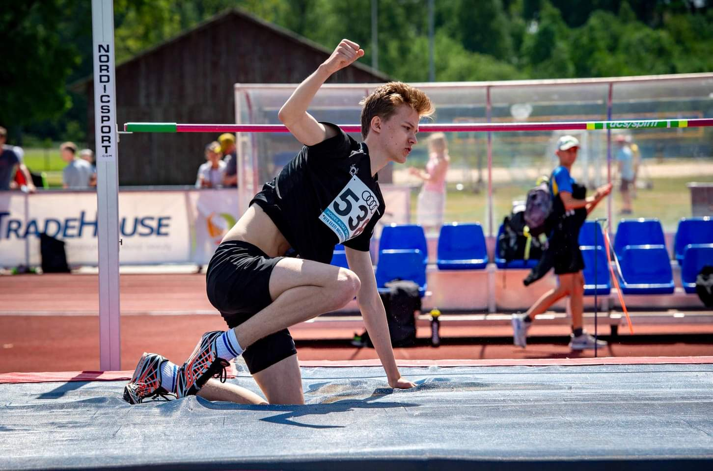
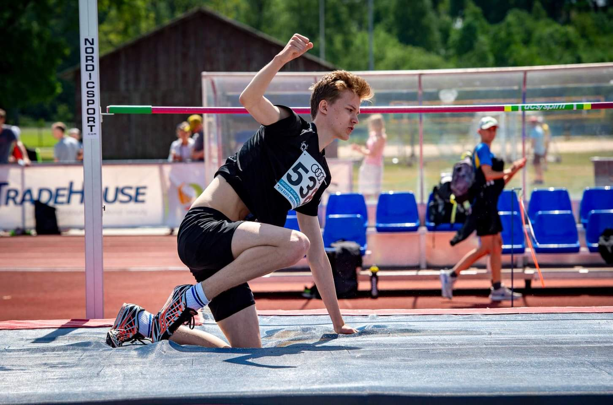
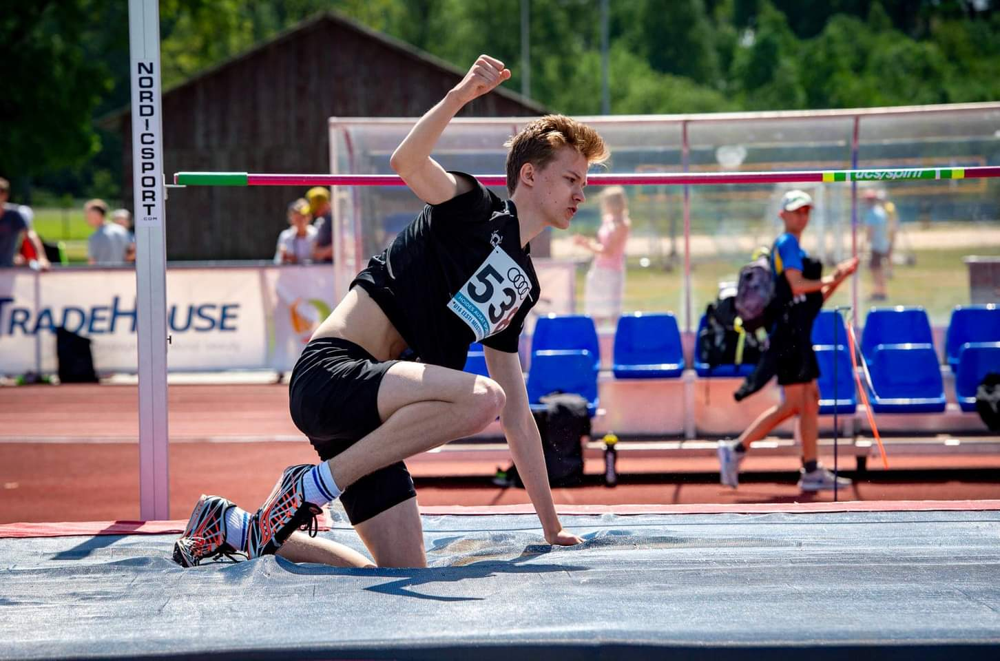

Kõrgushüpe on spordiala, mis keskendub vertikaalsele hüppevõimele ja tehnilisele sooritusele. Treeningud hõlmavad erinevaid hüppe- ja jõuharjutusi, eesmärgiga parandada koordinatsiooni, kiirust ja hüppe kõrgust. Ala sisaldab võistlusi, kus hinnatakse nii hüppe kõrgust kui ka tehnikat.
Paar pilti minu saavutustest sellel alal: (ma veel otsin neid pilte. need on suht lost media)

Arvutimängud on minu jaoks rohkem kui lihtsalt ajaviide – need on võimalus sukelduda erinevatesse maailmadesse, proovida uusi strateegiaid ja arendada loogikat ning reaktsioonikiirust. Olen kirglik nii klassikaliste kui ka kaasaegsete mängude vastu ning naudin nii üksi seiklemist kui ka sõpradega meeskonnatööd.


Counter Strike 2: Klassikaline taktikaline tulistamismäng...
League of Legends: MOBA žanri lipulaev...
War Thunder: Realistlik sõjasimulaator...
Mu kõige rohkem mängitud mängud